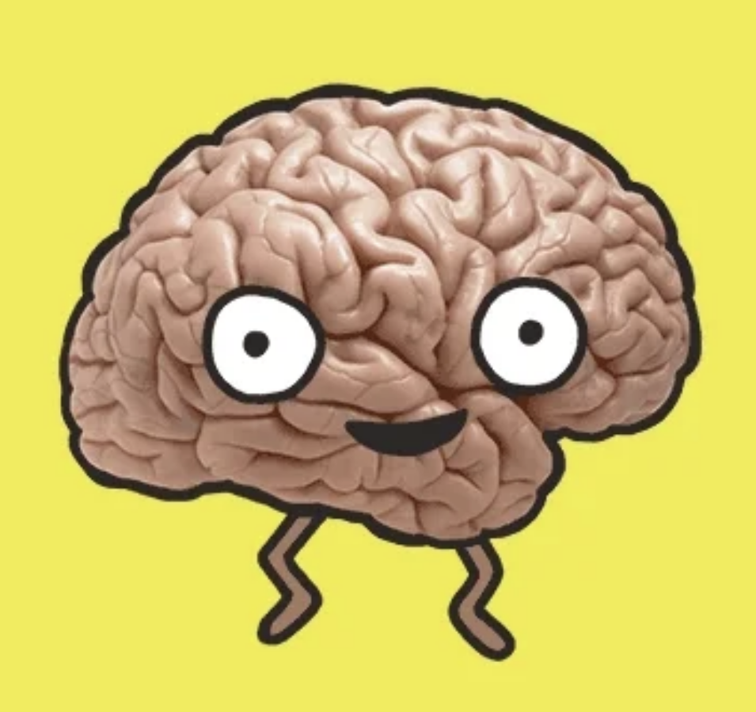

У Кремнієвій долині новий тренд з підвищення продуктивності й поліпшення якості життя – дофамінове голодування. Люди відмовляються від задоволень: від солодощів, інтернету, шопінгу чи порно – щоб навчитися цінувати радощі життя по-новому. Розповідаємо, у чому суть нового тренду.
Сучасна економіка побудована на тому, щоб викликати в людей залежності, вважає доктор Камерон Сепах, клінічний професор психології в Інституті нейронаук UCSF Weill. Саме він уперше придумав ідею дофамінового голодування – відмову від фаст-фуд, соцмереж, медіа, ґаджетів й онлайн-покупок. На його думку, усе це дає людям миттєве задоволення й змушує шукати його знову та знову, призводячи до залежності. І все через дофамін.
Як працює дофамін
Дофамін – це нейромедіатор, що відповідає за задоволення, мотивацію й винагороду. Коли людина робить те, що їй подобається, наприклад, їсть шоколадне тістечко, гортає стрічку Instagram, дивиться улюблений серіал на Netflix чи купує нову річ, дофамінові рецептори збуджуються. Доступність швидких задоволень призводить до того, що з часом нам хочеться їх у більших кількостях, і зрештою це спричиняє залежність. На думку Сепаха, через це ми втрачаємо здатність радіти від маленьких задоволень, гірше концентруємося й контролюємо емоції.
Психолог наголошує, що це не привід демонізувати дофамін. Адже якщо його рівень низький, це стає причиною низької мотивації, втоми й стресу. Головна ідея полягає в тому, щоб обмежити активність, пов’язану зі збільшенням рівня дофаміну, щоб "перезавантажити" систему.
Що таке дофамінове голодування
Дофамінове голодування – це тимчасова відмова або обмеження задоволень, що викликають викид дофаміну. Її суть не в тому, щоб знизити рівень дофаміну загалом, а в тому, щоб обмежити активність, яка викликає залежність. Наприклад, якщо людина витрачає забагато часу на соцмережі, і це заважає їй продуктивно працювати та спілкуватися з близькими.
Варто відмовитися від Instagram чи Facebook на певний час. На думку Камерона, тимчасова відмова від задоволень перезапускає дофамінову систему. Суть не в тому, щоб сприймати технології, їжу чи покупки як зло й боятися підвищення рівня дофаміну, а в тому, щоб навчитися усвідомлено керувати своїми бажаннями і стимулами.
Від чого потрібно відмовитися
- емоційна їжа
- інтернет і відеоігри
- азартні ігри й шопінг
- порно і мастурбація
- пошук гострих почуттів
- рекреаційні наркотики
Проте підхід у кожного буде індивідуальним і залежить лише від того, що конкретно заважає людині. Наприклад, відмова від технологій може бути гнучкою: варто відмовитися від гортання стрічки соцмереж на ніч, але читання художньої книжки з Kindle не завадить.
Психолог пропонує переходити на дофамінову дієту поступово, починаючи з однієї години на день. Далі можна збільшувати періоди "голодування" до трьох-чотирьох годин увечері після роботи, а згодом додати цілий вихідний і два вихідні поспіль раз на квартал.
Тим, хто готовий піти далі, Сепах радить наважитися на дофамінове голодування протягом цілого тижня раз на рік, наприклад, у відпустці. Звільнений час він пропонує використати на тренування, приготування здорової їжі, прогулянки на свіжому повітрі, живе спілкування й творчість.
Чи дійсно це працює
Матеріал Сепаха про дофамінове голодування за перші два місяці зібрав понад 100 тисяч переглядів і тисячі коментарів. Його метод уже став новим трендом у Кремнієвій долині: люди, які випробували його, повідомляють про поліпшення якості життя й спілкування. Сепах також пропонує використовувати метод своїм пацієнтам.
Поки що ефективність цього методу не підтверджувалася і не спросовувалася науковими дослідженнями. Деякі психологи та нейронауковці вважають, що ідея обмеження швидких задоволень може мати сенс. Психолог Мічиганського університету Кент Беррідж, який вивчає процеси задоволення мозку, у коментарі для Inverse каже , що ми дійсно живемо у світі, що заохочує нас постійно шукати задоволення.
"Це правда, що ми живемо у світі, багатому на винагороди. Навіть коли ми не споживаємо винагороди, ми часто стикаємося з тим, що про них нагадує: у рекламі й на обгортках, коли відчиняємо наш холодильник, у мережі й в електронних листах. Це тримає нас у постійному режимі дофамінової активації", – пояснює Беррідж.
Проте науковці точно не знають, чи можуть дофамінові рецептори насправді «відвикнути» від задоволень. Дослідження на тваринах, яких годували їжею з високим вмістом жиру, що спричиняло підняття рівня дофаміну, показали, що після повернення до звичайного харчування, рецептори повертаються в норму.
Але це стосується тільки тварин, на людях це може не спрацювати, вважають вчені. Подібні дослідження поки що проводилися тільки з людьми, які вживають алкоголь і наркотики. Вплив соцмереж і солодощів на дофамінову систему не досліджувався.

Нейродослідник Ерік Боуман з Університету святого Ендрю в Шотландії вважає, що дофамінове голодування може помірно вплинути на дофамінову систему і точно матиме великий вплив на інші системи в мозку й тілі людини. Проте визначити точно, чи цей метод дійсно працює можна буде лише тоді, коли дофамінову функцію людини виміряють до, під час і після дофамінового голодування.
Але водночас психологи вважають, що цей метод може дійсно мати позитивний вплив на організм, адже він допомагає зробити спосіб життя здоровішим, а розпорядок дня – стабільнішим.